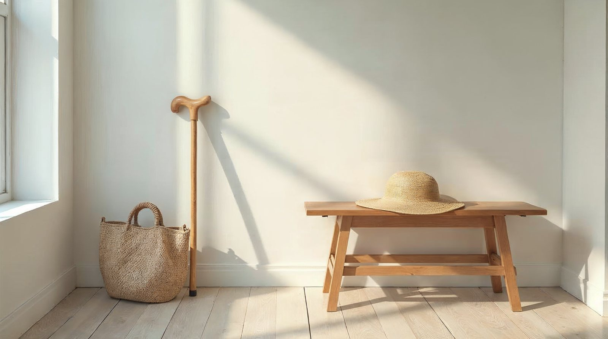
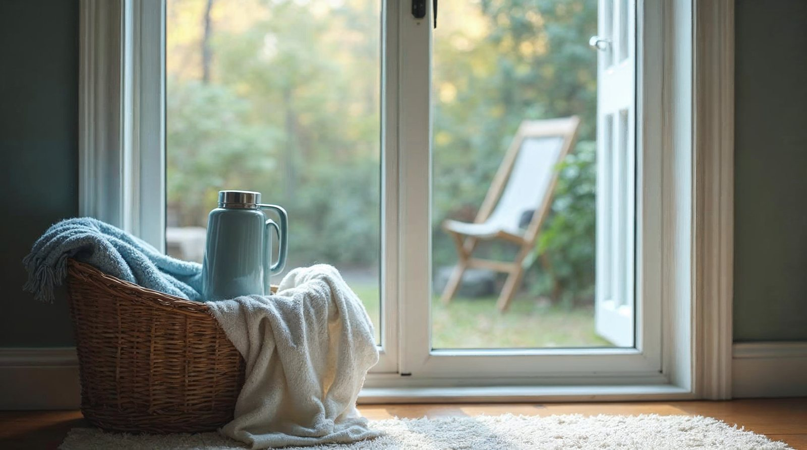
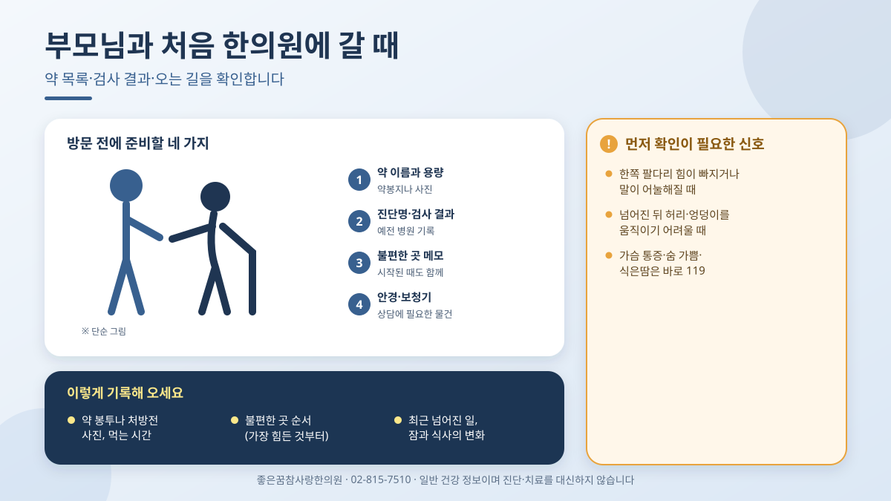

이종호 한의사 감수좋은꿈참사랑한의원 대표원장 (한의사 면허번호 19769)발행 2026-11-23 · 수정 2026-11-26
이 글의 차례
- 왜 미리 챙기면 좋을까요
- 왜 가장 힘든 것 한 가지부터 여쭤볼까요?
- 나이 들어 오는 변화와 지금 생활을 막는 불편은 다른 얘기예요
- 검사지에 '퇴행'이라고 적혀 있어도
- 먼저 이렇게 여쭙니다
- 방문 전에 준비할 것
- 약은 이렇게 챙겨 오시면 돼요
- 방문 전에 체크해 보세요
- 이동과 접근
- 진료실에서 어르신이 편하게 말씀하시도록
- 넘어진 일은 꼭 알려 주세요
- 잠과 대소변까지 여쭤보는 이유
- 균형이 예전 같지 않으시다면
- 입맛과 식사도 함께 봐요
- 어르신 마음도 살펴 주세요
- 한의원에서 함께 살필 수 있는 경우
- 치료는 어떻게 정하나요?
- 어르신께 부탁드릴 건 딱 하나예요
- 다음 방문은 이렇게 같이 정해요
- 자녀분이 멀리 사신다면
- 귀가하신 뒤에는요
- 몸이 보내는 작은 변화를 적어 두세요
- 이렇게 기록해 오시면 상담이 쉬워집니다
- 이런 증상은 먼저 확인이 필요합니다
부모님을 모시고 처음 오실 때는 약 목록과 검사 결과, 그리고 3층까지 오는 방법을 미리 확인하는 것이 가장 중요합니다. 어르신은 불편이 여러 곳에 있고 복용하는 약도 많은 경우가 많습니다. 자녀가 함께 가면 이야기를 정리하는 데 도움이 됩니다.
진료실에 부모님을 모시고 오신 자녀분들이 이런 말씀을 자주 하세요. "원장님, 어머니가 여기저기 다 아프다고 하시는데 어디부터 봐야 할지 모르겠어요." 그 마음 잘 알아요. 그리고 어르신 입장에서는 "자식 귀찮게 하는 것 같아서" 아픈 걸 덜 말씀하시는 경우도 많고요.
먼저 이 말씀부터 드리고 싶어요. 나이가 들면서 여러 곳이 동시에 불편해지는 건 원래 그래요. 오래 써 온 몸이니까 때가 돼서 오는 자연스러운 변화인 경우가 많거든요. 겁낼 일이라기보다, 앞으로 더 편하게 지내시도록 같이 챙기면 되는 일이에요.
왜 미리 챙기면 좋을까요
- 어르신은 여러 병원에서 받은 약이 겹쳐 있는 경우가 많아 약 목록 확인이 특히 중요합니다.
- 불편한 곳이 여러 군데라 진료실에서 한꺼번에 말씀하시기 어려워하는 분이 많습니다.
- 귀가 어둡거나 기억이 걱정되면 보호자가 함께 들어야 안내 내용을 놓치지 않을 수 있습니다.
- 어르신은 넘어지거나 부딪힌 일을 대수롭지 않게 여겨 말씀하지 않는 경우가 있어 보호자가 함께 알려 주시면 좋습니다.
왜 가장 힘든 것 한 가지부터 여쭤볼까요?
왜인 줄 아세요? 어르신들은 무릎이 아프다가, 허리가 아프다가, 어깨가 아프다가 하면서 아픈 곳이 왔다 갔다 하는 경우가 많아요. 그건 한 곳만 문제가 아니라 몸 전체가 지쳐 있다는 뜻일 때가 많거든요. 순서만 바뀌는 거예요.
그래서 다 같이 봐야 하는 건 맞아요. 다만 진료실에서 한꺼번에 다 말씀하시면 어르신도 지치고, 정작 가장 힘든 게 묻혀 버려요. 그래서 "지금 가장 힘드신 거 하나만 먼저 말씀해 주세요" 하고 시작하는 거예요. 나머지는 하나씩 차례로 보면 돼요.
나이 들어 오는 변화와 지금 생활을 막는 불편은 다른 얘기예요
저는 어르신을 볼 때 이걸 꼭 둘로 나눠서 생각해요. 예전보다 조금 뻣뻣하고, 걸음이 느려지고, 잠이 얕아지는 건 나이가 들며 오는 자연스러운 변화예요. 그런데 그 때문에 장 보러 못 가시고, 계단 앞에서 멈추시고, 밤에 자꾸 깨서 낮에 기운이 없으시다면 그건 지금 생활을 막고 있는 불편이에요.
앞의 것은 겁낼 일이 아니에요. 뒤의 것은 같이 챙길 일이고요. 어르신이 "나이 들면 다 그렇지" 하고 넘기시는 것 중에 생활을 막는 불편이 섞여 있는 경우가 많아서, 자녀분이 옆에서 "요즘 이걸 못 하세요"라고 짚어 주시면 많이 도움이 돼요.
검사지에 '퇴행'이라고 적혀 있어도
예전 병원에서 받은 검사 결과에 '퇴행성'이라는 말이 적혀 있으면 어르신도 자녀분도 겁부터 나시죠. 그런데 오래된 자개장도 잘 쓰면 오래 멀쩡하잖아요. 검사지에 닳은 흔적이 보여도, 어떻게 쓰느냐에 따라 지내는 모습은 사람마다 많이 달라요.
그래서 저는 검사지 숫자만 보지 않고, 어르신이 실제로 어떤 동작에서 힘드신지를 같이 봐요. 잘 쓰면 돼요. 앞으로 그 몸을 어떻게 덜 힘들게 쓸지 같이 찾아가는 거예요.

먼저 이렇게 여쭙니다
처음 오시면 진료실에서 이런 것부터 여쭙습니다.
- 지금 가장 힘드신 곳 한 가지와 언제부터 그랬는지
- 잠·소화·대소변은 어떤지
- 서고 걷고 앉을 때 어떤 동작이 힘든지

방문 전에 준비할 것
- 복용 중인 약 이름과 용량(약봉지나 사진)
- 예전 병원에서 받은 진단명이나 검사 결과
- 불편한 곳과 시작된 때를 메모한 종이
- 안경, 보청기 같은 필요한 물건
약은 이렇게 챙겨 오시면 돼요
어르신 약은 생각보다 많아요. 내과, 정형외과, 안과에서 받은 약에 영양제와 건강식품까지 더하면 하루에 드시는 게 꽤 되거든요. 이름이 기억나지 않아도 괜찮아요. 집에 있는 약봉지와 약통을 큰 봉투에 다 담아 오시거나, 한 번에 사진을 찍어 오시면 돼요.
아침, 점심, 저녁, 자기 전 중에 언제 드시는지도 같이 알려 주세요. 어르신이 실제로 챙겨 드시는 것과 처방받은 것이 다를 때도 있어서, 실제로 어떻게 드시는지가 중요해요.
드시던 약은 처방한 의사와 상의 없이 줄이거나 끊지 않습니다. 한약이 필요하다고 판단되면 드시는 약을 먼저 하나하나 확인한 뒤에 상담하고, 드시는 중에 불편하시면 복용을 멈추고 연락 주세요.
방문 전에 체크해 보세요
- 약봉지와 약통, 영양제, 건강식품을 모두 챙겼다
- 예전 검사 결과지나 진단명을 메모했다
- 가장 힘든 곳 한 가지를 어르신과 미리 정했다
- 최근 넘어지거나 부딪힌 일이 있었는지 여쭤봤다
- 보청기, 안경, 지팡이처럼 늘 쓰시는 물건을 챙겼다
- 오시는 길과 주차를 미리 전화로 확인했다
이동과 접근
- 한의원은 신성빌딩 3층·5층에 있고, 건물에 엘리베이터가 있습니다. 휠체어로 오시거나 거동이 많이 불편하시면 접근 방법을 방문 전에 전화(02-815-7510)로 확인해 주세요.
- 노량진역에서는 동작 01번 마을버스, 상도역에서는 3번 출구로 오는 경로가 있습니다.
- 주차 가능 여부와 위치는 방문 전 02-815-7510으로 전화하시면 안내해 드립니다.
- 비가 오거나 길이 미끄러운 날에는 자가용이나 택시 이용을 고려하기
오시는 날은 굽이 낮고 발에 잘 맞는 신발, 늘 쓰시던 지팡이가 있으면 지팡이도 챙겨 오시면 좋아요. 옷은 무릎이나 어깨를 걷어 보기 쉬운 넉넉한 걸로요. 너무 배고프지 않게 평소처럼 식사하고 오시는 게 어르신 기운에도 좋아요.
진료실에서 어르신이 편하게 말씀하시도록
어르신께는 제가 천천히, 또박또박, 조금 큰 목소리로 여쭤요. 잘 안 들리시면 다시 여쭙고요. 그러니 서두르지 않으셔도 돼요. 생각이 안 나시면 생각날 때까지 기다리면 되는 거예요.
자녀분께 부탁드리고 싶은 게 하나 있어요. 어르신이 말씀하시는 중간에 대신 대답하지는 말아 주세요. 어르신 입으로 직접 들어야 알 수 있는 게 있거든요. 어르신 말씀이 끝나면 그때 "요즘 이런 것도 있으셨어요" 하고 보태 주시면 돼요.
그러니까 사실은 자녀분은 통역사가 아니라 기억을 돕는 분이에요. 어르신이 빠뜨리신 것, 대수롭지 않게 넘기신 것을 옆에서 살짝 짚어 주시는 게 가장 큰 도움이에요.
넘어진 일은 꼭 알려 주세요
어르신들은 넘어지고도 "별거 아니야" 하고 말씀을 안 하시는 경우가 많아요. 자식 걱정시킬까 봐서요. 그런데 최근에 넘어지신 일이 있으면 어디가 불편한지 보는 데 아주 중요한 정보가 돼요.
언제, 어디서, 어떻게 넘어지셨는지, 그 뒤로 불편해진 곳이 있는지 미리 여쭤봐 주세요. 어르신이 기억 못 하셔도, 자녀분이 본 것만이라도 알려 주시면 돼요.
잠과 대소변까지 여쭤보는 이유
무릎이 아파서 오셨는데 잠과 화장실 이야기를 물으면 의아해하시는 분이 있어요. 그런데 어르신 몸은 한 곳만 따로 움직이지 않아요. 밤에 화장실 때문에 서너 번 깨시면 잠이 얕아지고, 잠이 얕으면 낮에 기운이 없고, 기운이 없으면 통증도 더 크게 느껴지거든요.
그래서 저는 아프신 곳 하나만 보지 않고 몸 전체를 봐요. 아프신 곳만 덜 아프게 하는 게 아니라, 몸이 전체적으로 좋아지는 쪽으로 가는 게 제가 바라는 거예요.
균형이 예전 같지 않으시다면
나이가 들면 균형 감각이 조금씩 떨어지는 건 사실은 자연스러운 일이에요. 그런데 손주들이랑 나들이도 가고, 여행도 다니고 싶으시잖아요. 그러니까 문제가 되는 거죠. 그건 충분히 같이 챙겨 볼 수 있는 일이에요.
요즘 걸음이 느려지셨는지, 문턱에 자주 걸리시는지, 일어설 때 무언가를 꼭 짚으시는지 자녀분이 한번 봐 주세요. 그런 모습을 알려 주시면 어떤 동작부터 살필지 정하는 데 많이 도움이 돼요.
입맛과 식사도 함께 봐요
어르신이 혼자 지내시면 끼니를 대충 때우시는 경우가 많아요. 입맛이 없다고 하시거나 드시는 양이 확 줄었다면 그것도 알려 주세요. 잘 드셔야 기운도 나고, 치료를 받으셔도 몸이 따라오거든요.
틀니가 불편하거나, 소화가 잘 안 되거나, 혼자 차려 드시기 귀찮아서 덜 드시는 경우도 있어요. 요즘 어떤 음식을 주로 드시는지, 드시고 나서 속이 불편하다고 하시는지 미리 여쭤봐 주세요.
어르신 마음도 살펴 주세요
어르신들은 병원에 가자고 하면 "괜찮다, 바쁜데 뭘" 하시는 경우가 많아요. 자식에게 짐이 될까 봐서요. 그 마음을 알아 드리고, "같이 가서 좋아요" 한마디 해 주시면 어르신 표정부터 달라져요.
한의원에 오시는 걸 부담스러워하시면 처음엔 가장 힘드신 곳 하나만 보러 가자고 해 보세요. 오셔서 이야기 나누다 보면 다른 불편도 자연스럽게 꺼내시는 경우가 많아요.
한의원에서 함께 살필 수 있는 경우
- 무릎, 허리, 어깨가 함께 불편한 경우 어떤 동작이 특히 힘든지 하나씩 묻고 살핍니다.
- 잠이 얕고 소화가 약한 경우 하루 리듬을 함께 살핍니다.
- 약을 많이 드시는 경우 복용 목록을 확인하고 겹치는 부분을 점검합니다.
- 추나는 어르신의 상태에 맞춰 조심스럽게 진행하는 방법을 상담합니다.
- 어르신이 밤에 자주 깨거나 화장실에 자주 가는 경우 잠과 대소변을 함께 살핍니다.
처음 오시면 접수한 뒤 원장이 모든 분께 맥부터 짚으며 불편한 곳과 생활을 여쭙습니다. 필요하다고 판단되면 혀와 배를 살피거나 초음파로 확인하고, 상태에 맞는 치료와 다음 방문 안내로 이어집니다. 다시 오시면 지난번 이야기부터 이어서 여쭙습니다.
치료는 어떻게 정하나요?
어르신은 같은 불편이라도 기운과 드시는 약, 뼈와 관절 상태에 따라 할 수 있는 게 달라요. 그래서 침, 약침, 추나, 온열 물리치료 같은 방법 중에서 어르신 몸에 부담이 적은 쪽부터 같이 정해요.
처음부터 여러 가지를 한꺼번에 하지 않아도 괜찮아요. 최대한 천천히, 어르신이 편해하시는 걸 보면서 하나씩 더하는 거예요. 치료 중에 불편하시면 바로 말씀하시라고 미리 말씀드려요.
어르신께 부탁드릴 건 딱 하나예요
여러 가지를 적었지만 어르신께는 하나만 부탁드려요. 매일 조금씩, 천천히 걸어 주세요. 빨리 걷거나 오래 걸을 필요 없어요. 집 앞 한 바퀴라도 매일 하시는 게 가끔 멀리 다녀오시는 것보다 훨씬 좋아요.
이것만 지켜 주시고 딴 건 하던 대로 편하게 하세요. 아프신 곳을 살피는 건 제가 맡을게요. 이 나이에도 하고 싶은 걸 하시면서 지내실 수 있게 같이 도와드리는 게 제가 바라는 거예요.
다음 방문은 이렇게 같이 정해요
어르신은 오시는 길 자체가 일이에요. 그래서 다음 방문은 어르신 기운과 이동 방법, 자녀분 일정까지 같이 생각해서 정해요. 무리해서 자주 오시다 지치시면 오래 이어 가기 어렵거든요.
처음 몇 번은 몸이 어떻게 반응하는지 보면서 간격을 맞추고, 보통 한 달 정도 지켜본 뒤 다시 계획을 이야기해요. 그때그때 어르신 상태를 보고 같이 조정하면 돼요.
자녀분이 멀리 사신다면
매번 모시고 오기 어려운 자녀분도 많으시죠. 그럴 때는 처음 한 번만이라도 함께 오셔서 약과 병력을 같이 정리해 두시면 좋아요. 그다음부터는 어르신 혼자 오셔도 이어서 볼 수 있거든요.
함께 오지 못하시는 날에는 궁금한 점이나 요즘 달라진 모습을 메모로 적어 어르신 편에 보내 주세요. 그 메모 한 장도 진료에 생각보다 많이 쓰여요.
귀가하신 뒤에는요
진료실에서 들은 이야기는 집에 가면 잘 기억이 안 나기 마련이에요. 원래 그래요. 함께 오신 자녀분이 휴대폰 메모에 오늘 들은 내용과 다음에 오실 때 확인할 것을 적어 두시면 좋아요. 다른 가족에게 전할 때도 편하고요.
치료 받은 날 저녁 어르신 컨디션이 어떠셨는지, 잠은 잘 주무셨는지, 다음 날 움직임은 어떠셨는지도 짧게 적어 두세요. 다음에 오실 때 그 메모를 보면서 이어 가면 돼요.
몸이 보내는 작은 변화를 적어 두세요
어르신과 가까이 지내는 자녀분은 작은 변화를 먼저 알아차리세요. 계단을 오르실 때 난간을 더 꽉 잡으신다든지, 앉았다 일어나실 때 "아이고" 소리가 늘었다든지요. 이런 건 어르신 스스로는 말씀하지 않으시는 경우가 많아요.
그런 모습을 언제부터 봤는지 짧게 적어 오시면 돼요. 숫자나 검사보다 그 한 줄이 어르신 생활이 어떻게 달라졌는지를 더 잘 알려 줄 때가 많거든요.
이렇게 기록해 오시면 상담이 쉬워집니다
- 약 봉투나 처방전 사진, 먹는 시간
- 불편한 곳의 순서(가장 힘든 것부터)
- 최근 넘어진 일, 잠과 식사의 변화
- 다니는 병원과 받은 진단명
- 보청기나 안경처럼 상담에 필요한 물건
어르신과 함께 미리 종이 한 장에 정리해 보세요. 맨 위에 가장 힘든 것 하나, 그 아래 나머지 불편, 맨 아래 드시는 약. 그 한 장만 있어도 진료실에서 이야기가 훨씬 수월해져요.
어르신이 직접 쓰시기 어려우면 자녀분이 받아 적어 주셔도 돼요. 글씨는 크게, 내용은 짧게요. 진료실에서 어르신이 그 종이를 보면서 직접 말씀하실 수 있으면 더 좋아요.
궁금한 건 그냥 아무거나 편하게 물어보세요. 어르신 이야기부터 천천히 같이 들어 볼게요.
이런 증상은 먼저 확인이 필요합니다
- 갑자기 얼굴 한쪽이 처지거나 한쪽 팔다리에 힘이 빠지거나 말이 어눌해진 경우
- 넘어진 뒤 허리나 엉덩이를 움직이기 어려운 경우
이런 신호가 있으면 한의원보다 가까운 병원이나 응급실을 먼저 찾으세요.

여쭙는 것
- 지금 가장 힘드신 곳 한 가지와 언제부터 그랬는지
- 잠·소화·대소변은 어떤지
- 서고 걷고 앉을 때 어떤 동작이 힘든지
한의원에서 함께 살필 것
- 무릎, 허리, 어깨가 함께 불편한 경우 어떤 동작이 특히 힘든지 하나씩 묻고 살핍니다.
- 잠이 얕고 소화가 약한 경우 하루 리듬을 함께 살핍니다.
- 약을 많이 드시는 경우 복용 목록을 확인하고 겹치는 부분을 점검합니다.
먼저 확인이 필요한 신호
- 갑자기 얼굴 한쪽이 처지거나 한쪽 팔다리에 힘이 빠지거나 말이 어눌해진 경우
- 넘어진 뒤 허리나 엉덩이를 움직이기 어려운 경우
한눈에 보는 표
| 구분 | 핵심 |
|---|---|
| 여쭙는 것 | 지금 가장 힘드신 곳 한 가지와 언제부터 그랬는지 잠·소화·대소변은 어떤지 |
| 한의원에서 함께 살필 것 | 무릎, 허리, 어깨가 함께 불편한 경우 어떤 동작이 특히 힘든지 하나씩 묻고 살핍니다. 잠이 얕고 소화가 약한 경우 하루 리듬을 함께 살핍니다. |
| 먼저 확인이 필요한 신호 | 갑자기 얼굴 한쪽이 처지거나 한쪽 팔다리에 힘이 빠지거나 말이 어눌해진 경우 넘어진 뒤 허리나 엉덩이를 움직이기 어려운 경우 |
자주 묻는 질문
보호자가 함께 들어가도 되나요?
가능하며, 어르신이 말씀하기 어려운 부분을 보호자가 도와 주시면 좋습니다.
약이 너무 많아 다 기억이 안 나는데 괜찮나요?
약봉지나 약 사진을 가져오시면 확인합니다.
휠체어로 갈 수 있나요?
건물에 엘리베이터가 있습니다. 휠체어로 오실 때의 접근 방법은 방문 전에 전화(02-815-7510)로 확인해 주세요.
어르신도 추나를 받을 수 있나요?
뼈와 관절 상태, 복용 약을 먼저 확인하고 어르신의 상태에 맞춰 조심스럽게 진행할지 함께 정합니다.
자녀가 함께 오지 못하면 어떻게 하나요?
어르신 혼자 오셔도 괜찮아요. 약봉지와 메모 한 장만 챙겨 오시면 천천히 여쭤보며 진행합니다.
좋은꿈참사랑한의원은 재진 때 지난번 이야기부터 이어서 여쭙니다. 진료시간과 예약은 오시는 길에서 확인하세요.
어디서 상담받을 수 있나요?
좋은꿈참사랑한의원은 서울 동작구 만양로2길 2 신성빌딩 3층·5층(서울 동작구 상도동, 7호선 상도역 3번 출구 근처)에 있습니다. 한의사 3명(이종호 대표원장, 조영기 수석진료원장, 정원영 진료원장)이 진료합니다. 진료시간은 평일 09:30~20:00(점심 13:00~14:00), 토·일·공휴일 09:30~15:00이며, 방문 전 전화로 확인을 권합니다. 예약은 네이버 예약, 카카오톡 상담, 전화 02-815-7510로 받습니다.
이 글은 일반적인 건강 정보이며 개인의 진단이나 치료를 대신하지 않습니다. 증상이 있거나 복용 중인 약이 있다면 진료를 통해 확인하세요. 치료 효과는 개인마다 다를 수 있습니다.
작성 기준: 일반적으로 알려져 있는 건강 정보를 참고해 정리했습니다(대표원장 감수). 증상 기록은 1~2주 동안 하루 1회, 비슷한 시간에 적어 오시면 지난 상태와 비교하기 쉽습니다.